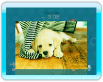

SDメモリーカード（SDHCメモリーカードを含む）やWii伝言板の写真を会話中の友だちに送って一緒に見ることができます。
14 |
写真を見せる |
 |
1.スピークルームまたはロビーの 2.「デジカメ・携帯電話」または「Wii伝言板の写真を見る」を選びます。 ※どちらを選んでも、その後の操作は同じです。以降は「デジカメ・携帯電話」を選んだ場合の説明です。 3.「デジカメ・携帯電話」 ※ 4.「この写真を見せる」を選んでください。会話をしている相手全員に送信されます。 ※を押すたびに、写真が90°ずつ時計回りに回転します。回転させた状態で送信することもできます。 ※を押すと前の写真が、を押すと次の写真が表示されます。 ※送信中は、送信の進み具合がパーセント（％）表示されます。 ※画面に「Wiiフレンドに送っています」が表示されているときに他のボタンを押すと送信が中止されます。

写真の受信が完了すると、スピークルームに写真が表示されます。 ※スピークルーム以外の画面では表示されません。 ※写真を送った側が「終了」を選ぶと、受け取った側の画面は元に戻ります。
|
 |
 |
 |